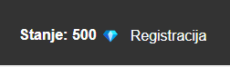

Prihajajoče načrtovano vzdrževanje
NAČTROVANO VZDRŽEVANJE
Sporočamo, da bo Razredni Časopis kmalu nedosegljiv zaradi vzdrževalnih del ter priprav na verzijo 3.1.
Začetni čas vzdrževanja: 6. Marec 2025, ob 16 uri
Predvidena dolžina vzdrževanja: Do 6. Marca, 20:00 (Približno 4 ure)
Prosimo da načrtujete uporabo strani v skladu s tem.
Obvestilo o vseh spremembah bo izdano takoj po vzdrževanju.
TU SO NAŠTETE VSE PRIHAJAJOČE SPREMEMBE V VERZIJI 3.1:
Sporočamo, da bo Razredni Časopis kmalu nedosegljiv zaradi vzdrževalnih del ter priprav na verzijo 3.1.
Začetni čas vzdrževanja: 6. Marec 2025, ob 16 uri
Predvidena dolžina vzdrževanja: Do 6. Marca, 20:00 (Približno 4 ure)
Prosimo da načrtujete uporabo strani v skladu s tem.
Obvestilo o vseh spremembah bo izdano takoj po vzdrževanju.
TU SO NAŠTETE VSE PRIHAJAJOČE SPREMEMBE V VERZIJI 3.1:
-
1. SISTEM ZA SPOROČILA RAZVIJALCEV
Ta sistem bo omogočal dostavo raznih sporočil ter nagrad razvijalcev. Le prijavite se v svoj Razredni Časopis račun
ter kliknite na ikono kuverte da dosežete vaša sporočila.
2. DIAMANTI
Sedaj ima vsak uporabnik z računom lastno banko! Na začetni strani se bo ob gumbu za registracijo nahajalo stanje na vašem računu. Nameni tega denarja pa bodo kmalu odkriti!

3. EVENTI
V verziji 3.1 se bodo vrnili določeni eventi. Več o tem preberite najnovejša obvestila po vzdrževanju.
4. PRAZNOVANJE OBLETNICE RAZREDNEGA ČASOPISA
Stran Razrednega Časopisa 10. Marca praznuje rojstni dan! Vsi uporabniki z računi bodo v sporočilih prejeli nekaj nagrad. Bodite pozorni in jih v unovčite v pravem času, saj bodo sporočila navoljo le za en dan!
To so vse spremembe, ki se bodo pojavile v verziji 3.1. Več podrobnosti se bo nahajalo v sporočilo po vzdrževanju.
Ostanite srečni ter zdravi,
Ekipa Razrednega Časopisa